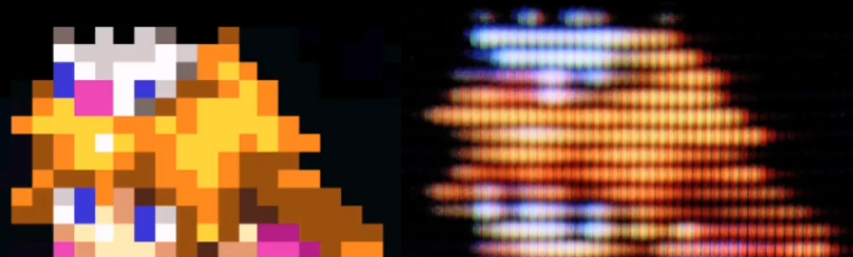

The CRT challenge
Previously I added my Amiga games to my Steam library so I can play them from Steam on my SteamDeck. What I really miss from playing games like that is the look and feel of the games on modern displays.
Displays/Monitor/Televisions back in the 90's utilised a very different technique to display an image.

image copied from datagubbe.se
While this isn't the best example it at least shows that the pixels are quite different back then. Read the article where the image was taken from for more insight.
RetroArch (or libretro) provides GPU shaders to emulate the effect of a CRT display.
If you run a game in RetroArch. Press the hotkey to open the menu (f1 or R3 & L3 on my controller). In the menu goto Shaders - Load Preset - shaders_glsl - crt and try a shader from the list.
Some nice examples:
- CRT-consumer: best so far
- CRT-geom: nice overall with curved borders
- CRT-lottes
- CRT-mattias: nice blurry and color bleed
- crt-cines
- fakelottes
- gtuv50: a bit blurry
- smuberstep-glow
There are way more shaders. I've only tested the CRT directory so far!